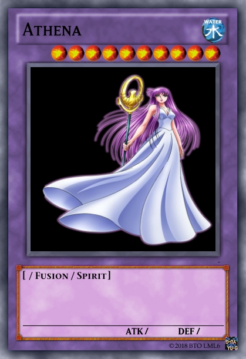
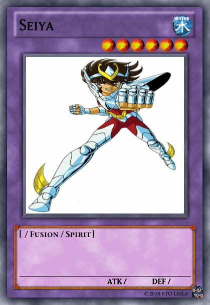
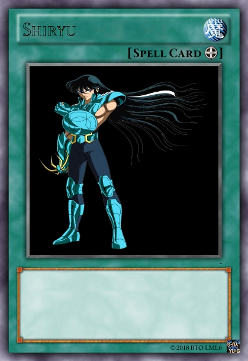
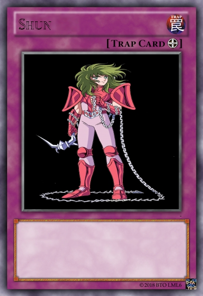
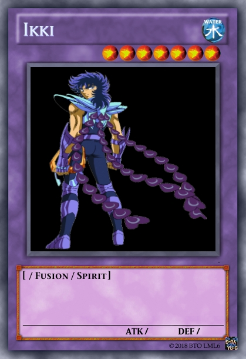
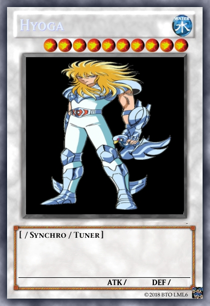

Serie de TV (1986-1989). Popular serie de animación basada en un manga y anime que relata la historia de 5 míticos guerreros llamados "caballeros", que han adoptado varias constelaciones como símbolos guardianes. Fue emitida en la cadena televisiva TV Asahi desde octubre de 1986 hasta Abril de 1989 en tres temporadas de 114 episodios. Inicialmente, la serie de televisión tenía planeadas 52 capítulos, pero su popularidad fue tan grande que se extendió a 73 episodios, convirtiéndose en la primera temporada de la serie y que corresponde al primer capítulo del manga, Santuario con algunos extras en el intermedio.
Antes de que venciera el contrato fue pactada una segunda temporada, Asgard (episodios 74 al 99), que no estaba basada directamente en el manga, sino que fue inspirada en el episodio Hyoga en el país de los hielos que se encuentra al final del tomo 13 del manga.
Posteriormente siguió una tercera temporada correspondiente al segundo capítulo del manga, Poseidón (ep. 100 al 114). Lamentablemente, la productora decidió no continuar con el tercer capítulo del manga, Hades dejando de esta manera la historia inconclusa.
Cabe resaltar que gran parte del éxito de la serie se debe a su dibujante en el anime, Shingo Araki, el cual realizó un gran cambio en el diseño de los personajes originales del manga, dándoles un toque más moderno, estilizado y sorprendente. El maestro Araki, junto con su inseparable colaboradora Michi Himeno, han diseñado personajes en innumerables series de dibujos animados, tanto en su país natal como colaborando en producciones internacionales, entre las cuales se encuentran éxitos como Ulises XXXI o El Inspector Gadget.
 
 
 